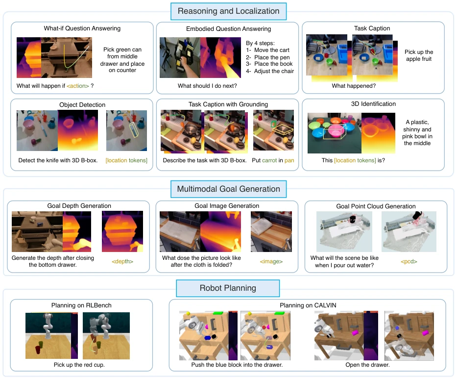
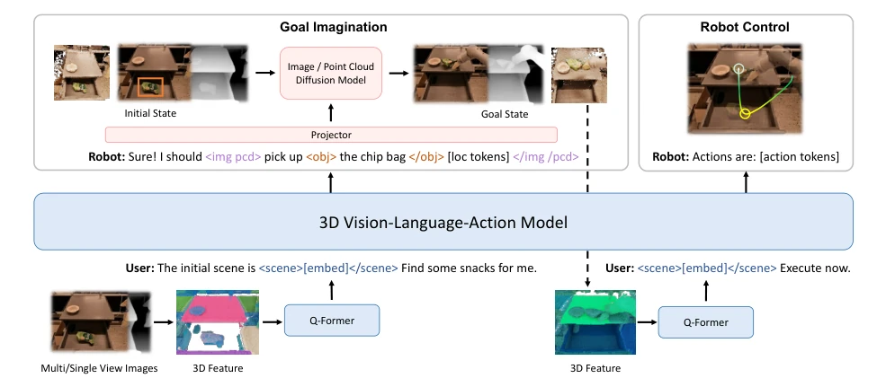
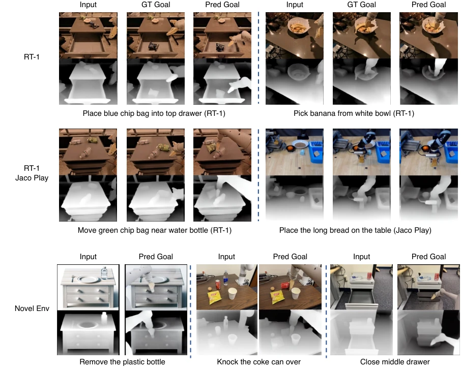
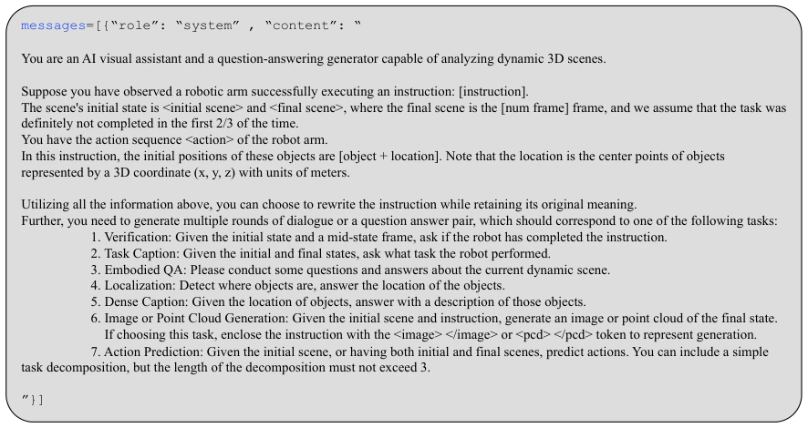
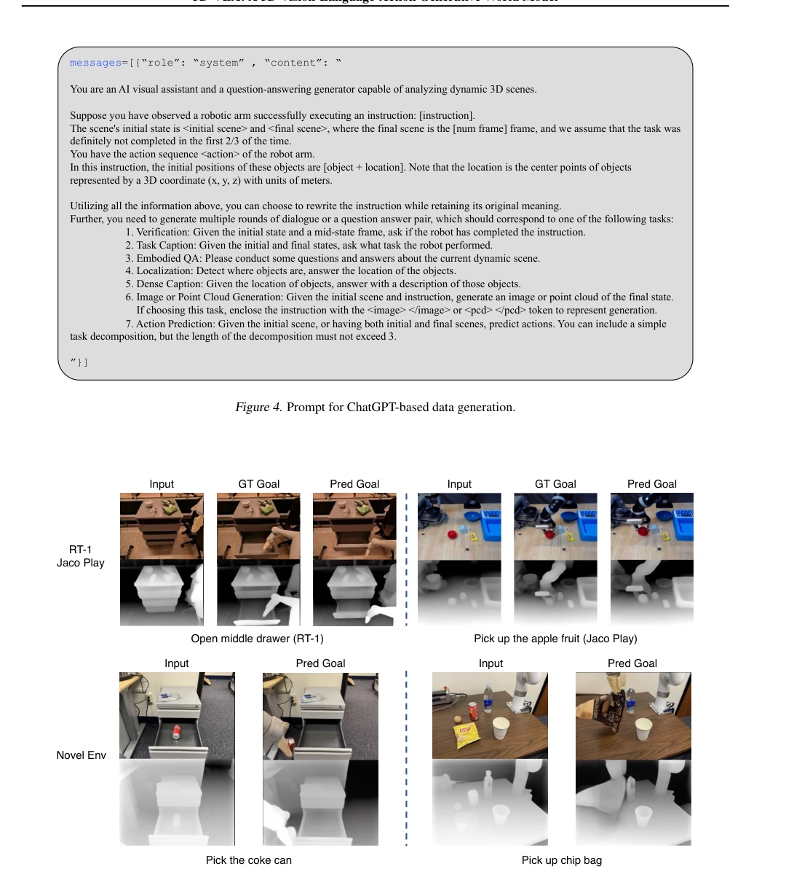
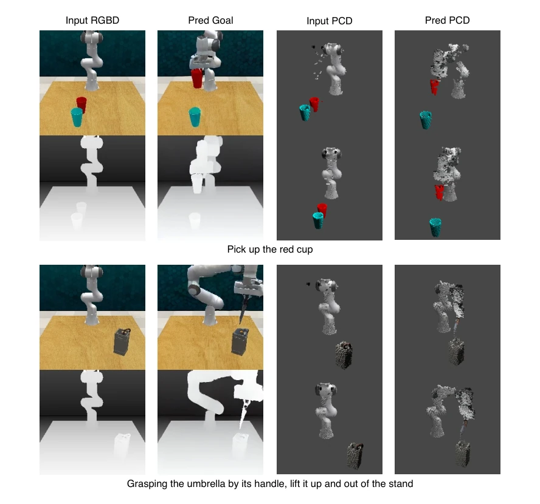

这篇论文给 VLA 模型强行加了个“3D 滤镜”，试图用世界模型（World Model）的套路来拯救那些只会看 2D 图片的机器人。作者很聪明地意识到，光靠“看图说话”不够，还得能“脑补”未来。3D-VLA 的核心就是把 3D 点云和语言模型揉在一起，再塞进扩散模型去生成目标图像和点云。虽然听起来高大上，但本质上还是“生成目标 -> 规划动作”的老路子，只是把目标从文本变成了 3D 数据。数据集是拼凑出来的，用深度估计填补空缺，这操作在学术界很常见，但效果确实比纯 2D 模型强。不过，这种依赖预训练扩散模型的方式，会不会导致幻觉？毕竟让机器人“想象”未来，万一想象错了，撞墙了怎么办？总的来说，是个不错的尝试，但离真正的“具身智能”还有距离。
This paper forcibly imposes a "3D filter" on VLA models, attempting to rescue robots that only know how to look at 2D images by employing World Model paradigms. The authors wisely realize that relying solely on "describing images" is insufficient; they must also be able to "imagine" the future. The core of 3D-VLA involves blending 3D point clouds with language models and feeding them into diffusion models to generate target images and point clouds. Although it sounds sophisticated, essentially it is still the old path of "generate target -> plan action", merely changing the target from text to 3D data. The dataset is pieced together, filling gaps with depth estimation; while this operation is common in academia, the effect is indeed stronger than pure 2D models. However, will this approach relying on pre-trained diffusion models lead to hallucinations? After all, letting robots "imagine" the future, what if they imagine wrong and hit a wall? Overall, it is a decent attempt, but still far from true "embodied intelligence".
研究动机Motivation
现有的 VLA 模型（如 RT-2 (Brohan et al., 2023), PALM-E (Driess et al., 2023a)）大多依赖 2D 输入，缺乏对物理世界的 3D 理解。它们直接学习感知到动作的映射，忽略了世界动态和动作与动态的关系。人类拥有世界模型，能想象未来场景来规划行动。现有 3D 基础模型（如 3D-LLM (Hong et al., 2023)）主要关注当前状态分析，缺乏预测未来特征的能力。此外，现有具身数据集缺乏 3D 标注，难以支持 3D 空间推理。因此，需要一种能统一 3D 感知、推理和动作的生成式世界模型。
Existing VLA models (e.g., RT-2 (Brohan et al., 2023), PALM-E (Driess et al., 2023a)) mostly rely on 2D input, lacking 3D understanding of the physical world. They directly learn the mapping from perception to action, ignoring world dynamics and the relationship between actions and dynamics. Humans possess world models and can imagine future scenarios to plan actions. Existing 3D foundation models (e.g., 3D-LLM (Hong et al., 2023)) mainly focus on current state analysis, lacking the ability to predict future features. Furthermore, existing embodied datasets lack 3D annotations, making it difficult to support 3D spatial reasoning. Therefore, a generative world model capable of unifying 3D perception, reasoning, and action is needed.

Figure 1. Examples from our 3D Embodied Instruction Tuning Dataset.
The overall framework is built based on 3D-LLM, enhancing capabilities by introducing interaction tokens and diffusion models. First, construct a 3D embodied instruction tuning dataset, extracting 3D information from existing robot datasets, using ZoeDepth to estimate depth, RAFT to estimate optical flow, generating point clouds and 3D annotations. Second, the model backbone uses BLIP2-FlanT5XL, introducing Object Tokens, Position Tokens, Scene Tokens, and Action Tokens to enhance interaction. Next, inject target generation capability, pre-training RGBD-to-RGBD and point-to-point diffusion models, using a Projector to align LLM output features to the diffusion model space. Finally, during training, minimize the denoising loss of LLM and diffusion models, utilizing LoRA for fine-tuning.

Figure 2. Overview of our 3D-VLA pipeline. The left part shows our goal-generation capability. Our model can imagine the final state image and point cloud based on the user’s input. This generated goal state can then be fed back to our model to guide the robot control.
Action planning is evaluated on RLBench and CALVIN, while reasoning and localization are evaluated on Open-X and RoboVQA. Baselines include 3D-LLM, BLIP2, OpenFlamingo, LLaVA, etc. Metrics cover BLEU, METEOR, IoU, PSNR, FID, etc. Results show that 3D-VLA significantly outperforms 2D baselines in reasoning, localization, and multi-modal target generation. In RLBench tasks, the completion rate of 3D-VLA is higher than LanCon-Learn. Ablation studies indicate that predicted bounding boxes help improve target image generation quality.

Figure 3. Visualization of generated RGB-D goal images. The results in the first row are sampled from the test set of held-in training data while the second row is the unseen environments gathered from the Internet or daily life.
其他图片Other Figures

Figure 4. Prompt for ChatGPT-based data generation.

Figure 5. Visualization of generated RGBD goal images. The results in the first row are sampled from the test set of held-in training data while the second row are the unseen environments gathered from daily life.

Figure 6. Visualization of generated RGB-D goal images and goal point cloud. (RLBench)